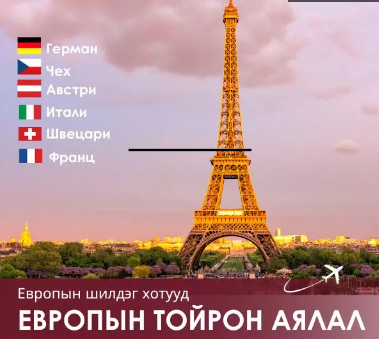
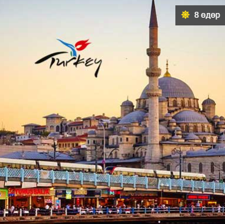
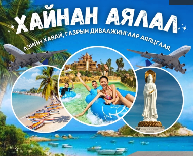
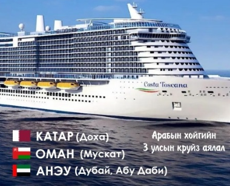

Европын аялал

Дэлхийн 2-р дайн дууссаны дараа олон улсын аялал жуулчлал дэлхийн өнцөг булан бүрт идэвхтэй хөгжиж эхэлснээс хойш Европ нь аялал жуулчлалын гол бүс болжээ.Энэхүү аяллаар та Европын төдийгүй дэлхийн нийгэм, улс төр, санхүү, аялал жуулчлалын төв болсон хамгийн том улсууд болох Герман, Нидерланд, Белги, Франц, Люксенбург, улсуудаар аялна. Мөн Европын хотуудын хүний гараар бүтээсэн барилга архитектор, түүхийн гайхамшиг болох ЮНЕСКО-ийн дэлхийн соёлын өвд бүртгэгдсэн газруудыг үзэж сонирхоно.
Туркийн аялал

Ази болон Европ тивийг зааглан, Газар дундын тэнгисийн хөвөө хязгаарт орших Турк улс нь аялахад нэн тааламжтай газар билээ. Тиймдээ ч энэхүү гайхамшигт газрыг жил тутам 50 орчим сая хүн үзэхээр зорьдог байна. Энэхүү аяллаар та Туркийн Ривьерагийн хурдацтай хөгжиж буй аялал жуулчлалын хот болох Анталия болон “Хөвөн цайз” Памуккалле, эртний Хиераполис хот уруу аялж Аполло сүм, Агора болон бусад газруудаар зочилно. Мөн Ази, Европыг холбосон Босфорын хоолойгоор голоороо тусгаарлагдсан Туркийн хамгийн том хот болох Истанбул хотын түүх, соёлын дурсгалтай танилцана.
Хайнань аялал

Газрын диваажин Хайнан арлын үзэсгэлэнт Саньяа хотын аялал,Дархан цаазат газар бүхий Сармагчны арал үзэх,Атлантис усан парк,Зөөлөн, торгон элст далайн эргийн аялал,Худалаа, үйлчилгээний томоохон төвүүд,
Арабын хойгийн круйз аялал

5 одтой дээд зэрэглэлийн, бүх хоол багтсан Круиз усан онгоцоор Арабын хойгийн 3 улс, 4 хот буюу Катарын Доха хот, Оманы Мускат хот, АНЭУ-ын Дубай ба Абу Даби хотуудаар аялах мартагдашгүй 8 өдрийн круйз аялалдаа урьж байна. 2022 онд үйлдвэрлэгдсэн 336 метр урт, 827 өрөөтэй, 6600 зорчиг тээвэрлэх хүчин чадал бүхий аварга том Costa Toscana усан онгоцоор Араб болон Оманы хойг, Арабын тэнгисээр аялна.